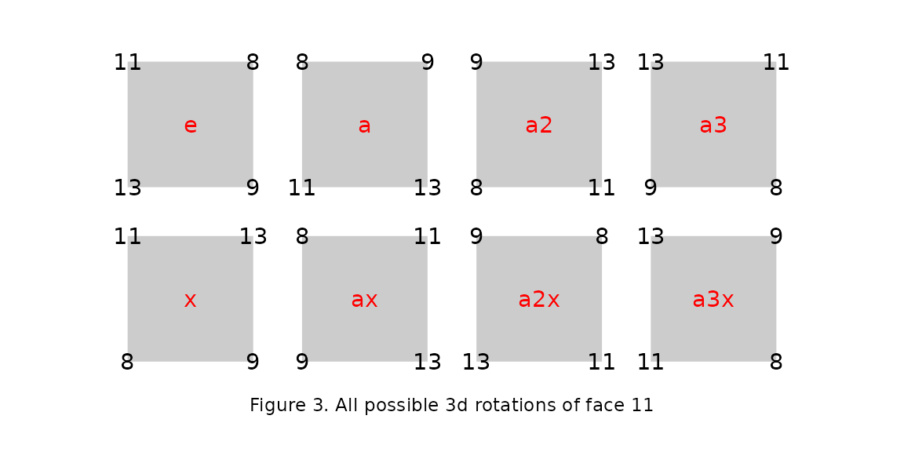

oriented-square-tiles
oriented-square-tiles.RmdBasics
The following figure shows a central oriented square, and the four different positions that another oriented square can take around it, when laid out on a plane.
In this figure, the numbers at the corners of each square are supposed to indicate its orientation. So how is that supposed to work?
The numbers are ordinals: ‘1’ means “first”, ‘2’ means “second”, ‘3’ means “third”, and so on, so the corners can be ordered, which is convenient. But also the corners don’t actually belong to the squares: if a square is picked up, rotated in 3d, and put back down, the vertices of the square and the ordered corners will then (usually) fit back together differently. An old way of thinking about this holds that there are 3 kinds of things involved here: (i) a plane, (ii) some places, and (iii) some squares. The squares fit into the places, and the places lie on the plane. So in this way of thinking, the corners belong to the places.
The following table (which is the oar dataset in the package) encodes the information shown in Figure 1, so that it can be queried and used. Each pair of neighboring corners in Figure 1 is either in the left half of the table or in the right half, but not both.
| a | b | c | d |
|---|---|---|---|
| 1 | 2 | 4 | 3 |
| 2 | 3 | 1 | 4 |
| 3 | 4 | 2 | 1 |
| 4 | 1 | 3 | 2 |
For example, suppose that two faces with vertices that are marked in some way meet at a common ridge (or “edge”) of some polyhedron. Once the two faces are detached from that polyhedron, Table 1 tells how to fit them back together, on the plane.
In Figure 2 face 7 and face 11, from the example_far dataset, share the 2 vertices with ids 11 and 13. In face 7 vertex 13 is in corner 1 and vertex 11 is in corner 4, while in face 11 vertex 13 is in corner 1 and vertex 11 is in corner 2.
Assuming that face 7 is fixed, then the vertices of the common ridge between the 2 faces are at corners 1 and 4, and in the table the corners opposite those are the corners 2 and 3 (row 2 in the table). So if face 11 can be rotated in 3d so that vertex 13 is at corner 2 instead of corner 1, and vertex 11 is at corner 3 instead of corner 2, then the two faces will be correctly aligned on the plane.
The following figure shows the placements that result from all the possible 3d rotations of face 11.

And inspecting Figure 3 it is evident that the d8 element named “a3” is the rotation that is needed. The layoutsquares package functions seem to agree:
vv <- c(1L,4L)
yy <- get_other_edge(vv)
print(yy) # see the opposite corners
#> [1] 2 3
op <- get_opuv(far, rar, 7, 11)
print(op) # see the 3d rotation, as a permutation in word form
#> w x y z
#> 4 1 2 3
names(which(apply(d8, 1, function(r) {all(r == op)})))
#> [1] "a3"The documentation for d8 describes the operations in a way that predicts the placements that appear in Figure 3.
| w | x | y | z | op | cycles | description |
|---|---|---|---|---|---|---|
| 1 | 2 | 3 | 4 | e | () | noop |
| 4 | 1 | 2 | 3 | a | (1432) | rotation by 270 counter-clockwise |
| 3 | 4 | 1 | 2 | a2 | (13)(24) | rotation by 180 |
| 2 | 3 | 4 | 1 | a3 | (1234) | rotation by 90 counter-clockwise |
| 3 | 2 | 1 | 4 | x | (13) | reflection about the diagonal 2-4 |
| 4 | 3 | 2 | 1 | ax | (14)(23) | reflection about the line joining midpoints of sides 14 and 23 |
| 1 | 4 | 3 | 2 | a2x | (24) | reflection about the diagonal 1-3 |
| 2 | 1 | 4 | 3 | a3x | (12)(34) | reflection about the line joining midpoints of sides 12 and 34 |